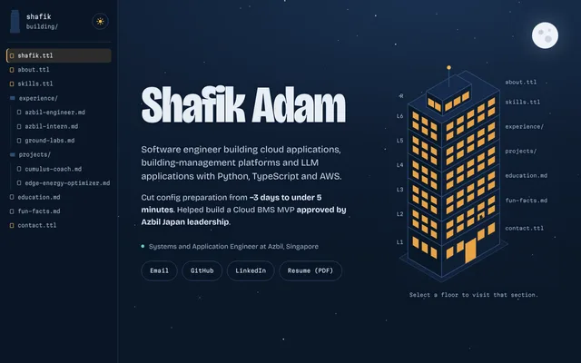

Once a month I sum up what I learned, like a short dev log for the month.
November 2026
Model predictive control. I fitted a simple thermal model from an experiment on a simulated building, then planned its heating 24 hours ahead, every hour. On weeks it hadn't seen, it cost 14% to 20% less than a fixed thermostat.
An AI dev team that ships.NAP, my Claude Code team of a PM, an Architect, an Engineer and a Reviewer, took one brief to a working app in about 45 minutes: 7 issues, 4 PRs, all approved on the first review, CI green.
What broke along the way. Agents in headless runs need one command per call. A test that only reads the CI file doesn't prove CI works. A stacked PR can land on a dead branch.
This site, three times over. The build log zine, the business card that opens into a drawing sheet, and this room. Scale the paper, never the text. Search for what exists before building it.
October 2026
Forecasting with real meter data. A day-ahead load forecast for an office building beat "same hour last week" by 24.5%. Data leakage took me three tries: lags count back from the hour you predict, not from now.
RAG and tool calling. I started cumulus-coach, an AWS study agent that answers with citations, refuses off-topic questions, and calls a tool.
Claude Code's building blocks. I learned CLAUDE.md, skills, hooks, subagents and plan mode by building this portfolio. Playwright drives a real browser to screenshot it and test its accessibility.
On the bookshelf
Museum of past versions
This portfolio has had three looks so far. Every version is still a tagged release you can open.

The building
v0.1.0 to v0.5.0, October to November 2026
An isometric building that leaned toward the mouse. Each floor was a section, read from the roof down, and a hidden basement opened behind a riddle.